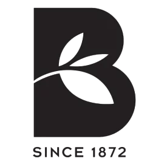
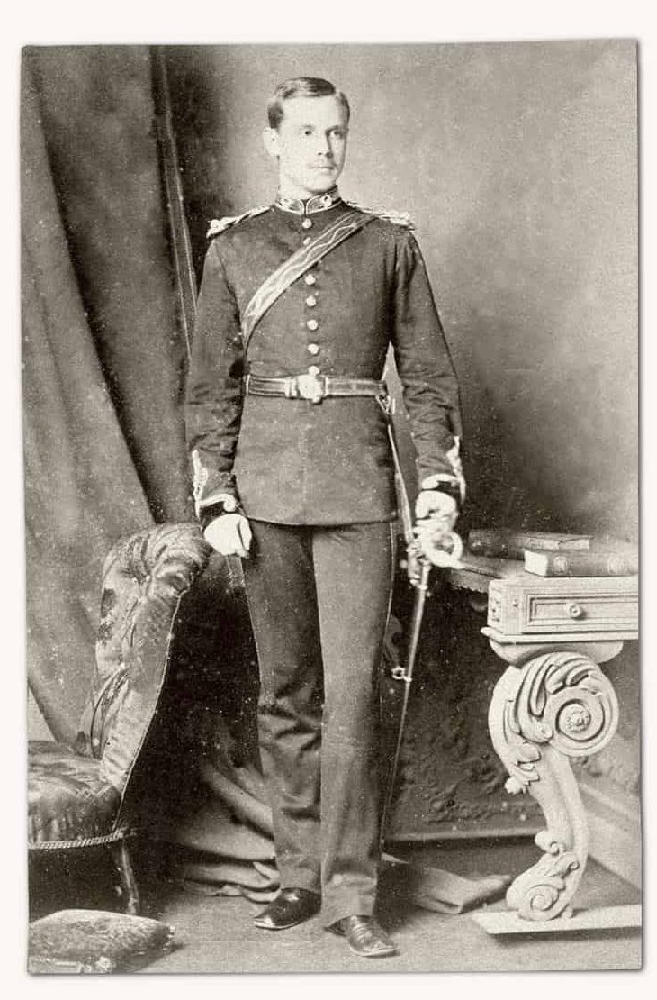
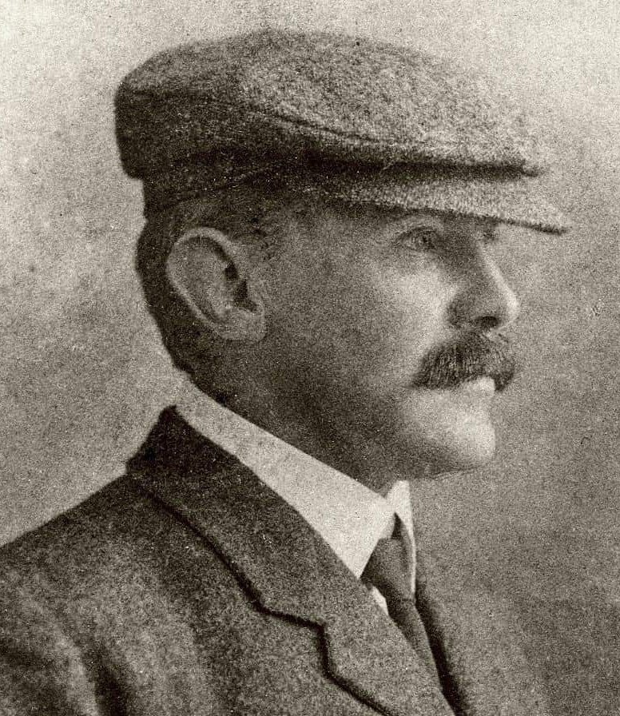
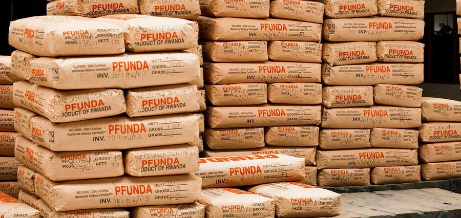

英國不產茶。大英茶文化的底牌，從來不是倫敦地標與皇家蕾絲邊的地理 Cliché，而是開疆闢土的全球供應鏈選品大腦（Master Blending）。
故事的起點在 1872 年。當時正值維多利亞女王統治時期，印度是大英帝國皇冠上的明珠。Captain Birchall George Graham 在陸軍「威靈頓公爵軍團」服役長達 18 年，長年駐守印度。返回英國後，他變賣了自己的軍職（sold his commission）以換取全部積蓄。隨後，他重返印度，攜手兄弟 Robert Fuller Graham 前往喜馬拉雅山腳下的大吉嶺，親手種下了第一株茶樹。

The bushes took time to grow at such high elevation, but with careful cultivation we created something truly special.
大吉嶺知名茶園分布於海拔 1,200 至 2,000 公尺。這片終年雲霧、低溫的高海拔環境，正對應了台灣阿里山、梨山等頂級高山茶的生長條件。在遠隔重洋的印度，茶樹同樣因高山低溫而生長極其緩慢，卻也因此凝聚出與台灣高山茶相同、無可替代的純淨香氣與茶湯厚度。曾駐守 18 年的英國軍官變賣資產，轉而成為大吉嶺茶葉協會的創始會員之一。他終身定居於此，最後長眠於大吉嶺的茶園之中。

這個家族的五代傳承，團隊核心架構便正式走過了一個半世紀的時間與世界版圖，只為尋找真正值得留下的一片茶葉。這裡沒有任何流於形式的故事包裝與行銷情懷，只有一個家族在 150 年的時間旅程裡，每一天、每一道工序都在執行的理性品控鐵律。這套跨越三個世紀的控制鏈，在產地直接匹配強大的資本採購權（Buying Power），在一年年中最正確的季節中斷點買斷頂級茶青。我們在茶園現場即刻進行新鮮封鎖與船運，在速度與原始生命力上領先市場，將剛完成乾燥時最原始、鮮甜、且毫無衰敗苦澀的茶湯實相完美鎖定。這是 Birchall 橫甩同業幾條街的血統底氣。我們平視市場，不自證，不解釋。事實就擺在這裡。

英國製造 ｜100% Made in the UK. 每一片茶包皆在威爾特郡原廠完成調配封裝。